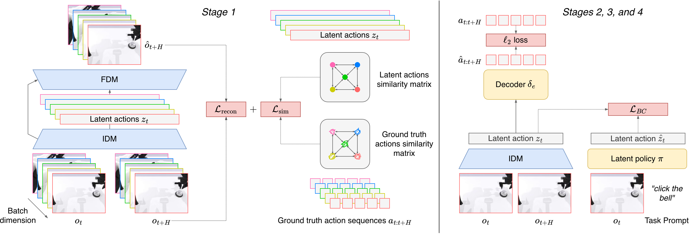
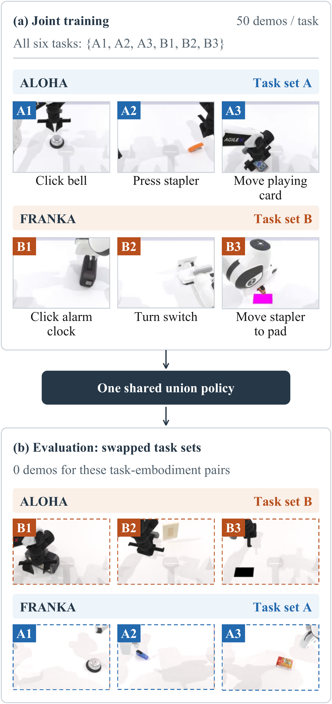

Improving Cross-embodiment Transfer in Latent Action Models with Action-Similarity Supervision
Maxime Alvarez (교신저자), Renzo Caballero, Tatsuya Matsushima, Yusuke Iwasawa, Yutaka Matsuo · The University of Tokyo (Graduate School of Engineering, Matsuo Lab)
제출: 2026년 9월 17일 (v1) · 벤치마크 RoboTwin 2.0 (시뮬레이션) · 정책 π0 (~3B) / Multi-Task DiT (49M) · 코드 링크 없음
한 줄 요약 (TL;DR)
Latent action model(LAM, 영상의 두 프레임 사이 변화를 로봇 종류와 무관한 압축 벡터 "latent action"으로 요약하는 모델)을 학습할 때, 소량의 실제 로봇 행동 라벨을 "직접 맞히는 정답"이 아니라 "두 동작이 서로 얼마나 비슷한가"라는 관계 신호로만 쓰자는 연구. 배치 안 latent action끼리의 유사도 행렬이 실제 행동 시퀀스끼리의 유사도 행렬과 같아지도록 학습한다(action-similarity supervision). 로봇 A로만 시연한 태스크를 로봇 B가 수행하는 통제된 교차 로봇 실험에서, 같은 π0 정책이 실제 관절 행동을 직접 예측하면 전이 성공률 24.0%인데, 최선 설정(LAOM+sim-EE-X)은 61.3%(2.55배)로 자기 로봇 태스크 성능(69.3%)의 88.5%를 옮겨 온다. 같은 라벨로 행동을 직접 예측하게 하는 보조 손실(34.0%)보다도 12점 높다.
1배경 · 문제의식
VLA(Vision-Language-Action, 이미지와 언어 지시를 받아 로봇 행동을 출력하는 모델)는 웹 규모 사전학습으로 시각·언어 능력은 좋아졌다. 그러나 행동이 기록된 로봇 시연 데이터는 비싸다. 또 시연은 그것을 기록한 특정 로봇에 묶인다.
LAM은 이 두 문제를 푸는 대안이다. 행동 라벨 없는 영상에서 "무엇이 움직였나"를 latent action으로 뽑는다. 이 latent action은 원리상 여러 embodiment(로봇의 몸체 형태, 즉 팔 구조·관절 수가 다른 로봇 종류)가 공유할 수 있다.
하지만 실제로는 두 가지 약점이 있다.
배경 잡음 민감성: 영상만 보고 학습하니 배경 변화 같은 무관한 시각 변화도 latent action에 섞인다.
로봇마다 다른 코드: 두 로봇이 같은 동작을 해도 겉모습이 달라 서로 다른 latent로 인코딩될 수 있다. 그러면 로봇 간 지식 이전(cross-embodiment transfer)이 안 된다.
기존 해법(LAOM 등)은 latent action에서 실제 로봇 행동을 예측하는 보조 헤드(auxiliary head)를 붙인다. 잡음은 줄지만, latent가 특정 로봇의 관절 좌표계에 끌려가 로봇 고유 정보를 담게 된다. 저자들은 같은 라벨을 다르게 쓰자고 제안한다. 행동값 자체가 아니라 "행동끼리의 유사도"만 맞추면, latent가 로봇 고유 좌표를 인코딩할 필요가 없다는 논리다.
2핵심 Contribution
통제된 교차 로봇 실험 설정 (RoboTwin 2.0) — 두 양팔 로봇(Aloha, Franka)이 서로 겹치지 않는 3개씩의 태스크만 시연한다. 평가 때 태스크를 맞바꿔, 각 로봇이 한 번도 시연하지 않은 태스크를 수행하게 한다. 정책 구조·하이퍼파라미터·데이터·평가를 고정하고 LAM만 바꿔 LAM의 효과만 분리한다.
Action-similarity supervision 레시피 — latent action 유사도 행렬을 실제 행동 시퀀스 유사도 행렬에 맞추는 단순한 손실. VILA(시점 불변 latent action 연구)의 전역 유사도 구조 항과 비슷하지만, 목표가 시점 강건성이 아니라 교차 로봇 전이다.
행동 목표 공간·지도 방식의 통제 비교 — 실제 행동 직접 예측(패딩 관절 공간, end-effector 변위) vs 8가지 LAM 변형, 그리고 보조 행동 예측 손실 vs 유사도 손실을 두 LAM 백본(AdaWorld, LAOM)에서 비교. 추가로 ViLA·ConLA·villa-X·CLAM 방식과도 비교.
3Method
전체 4단계 파이프라인
직관: 로봇마다 다른 "행동 언어"를 공통의 latent 언어로 번역해 두고, 정책은 공통 언어로만 생각하게 한 뒤, 마지막에 로봇별 통역기(decoder)로 실제 명령을 만든다.
Stage 1 — LAM 학습:IDM(Inverse Dynamics Model, 역동역학 모델: 현재·미래 관찰 두 장을 보고 그 사이 "행동"을 추정)이 관찰 ot와 H스텝 뒤 관찰 ot+H로부터 latent action zt를 만든다. FDM(Forward Dynamics Model, 순동역학 모델: 현재 관찰과 행동으로 미래를 예측)은 ot와 zt로 ot+H를 복원한다. 복원 손실 Lrecon은 실제 미래 관찰과 복원 결과의 제곱 오차 평균이다.
Stage 3 — latent 정책 학습: π0(Physical Intelligence의 flow matching 기반 VLA; flow matching은 노이즈를 목표 데이터로 옮기는 속도장을 학습하는 생성 방식)가 관찰과 언어 지시를 받아 연속된 16개의 latent action을 생성하도록 학습한다. 두 로봇 데이터를 모두 사용한다.
Stage 4 — 로봇별 decoder: 로봇 e마다 작은 MLP δe가 latent action을 그 로봇의 실제 행동으로 바꾼다. 자기 로봇의 라벨 데이터로만 학습한다(손실: 실제 행동 at와 δe(zt)의 제곱 오차). 3·4단계는 서로 독립이라 병렬로 한다.
배포 시 IDM·FDM은 버리고, δe(π(ot, g)) 형태로 닫힌 루프(closed-loop, 매 스텝 새 관찰을 보고 다시 행동하는 방식)로 실행한다.
두 가지 LAM 백본
직관: 제안 손실이 특정 구조에만 통하는지 확인하려고 성격이 다른 두 LAM에 모두 붙여 본다.
AdaWorld (VAE 백본): VAE(Variational AutoEncoder, 잠재 분포에 KL 제약을 거는 오토인코더) 방식. 시공간 Transformer 인코더가 64차원 연속 latent action을 만들고, 공간 Transformer 디코더가 다음 프레임을 픽셀 공간에서 복원한다. 시간 간격 H=1.
LAOM (multi-step 백본): CNN 인코더(IMPALA 구조, 64×64 입력)와 1024차원의 넓은 연속 latent. 간격 H를 1~10 중 무작위로 뽑는다. FDM은 픽셀이 아니라 인코더의 EMA(지수이동평균) 사본이 만든 미래 프레임 임베딩을 예측한다.
Action-similarity supervision (핵심)
직관: "두 영상 조각의 latent가 비슷한 정도 = 두 조각에서 로봇이 실제로 한 동작이 비슷한 정도"가 되게 만든다. 행동값을 직접 예측하지 않으므로 latent가 특정 로봇의 관절 좌표를 담을 이유가 없다.
메커니즘은 relational knowledge distillation(관계 지식 증류: 학생이 선생의 개별 출력이 아니라 샘플 쌍 사이의 관계를 따라 하게 하는 기법)이다. 여기서 학생은 latent action 공간, 선생은 실제 행동 공간이다. 행동 라벨이 있는 배치(크기 B=128)마다 B×B 유사도 행렬 두 개를 만든다.
Latent 유사도 Sz: 각 latent 벡터를 길이 1로 정규화(ℓ2 정규화)한 뒤, 모든 쌍 (i, j)의 코사인 유사도를 계산한다. Szij = sim(zi, zj). 그래디언트는 IDM으로 흘러간다.
실제 행동 유사도 Sa: latent는 "시각적 변화"를 담으므로, 비교 대상도 절대 자세가 아니라 움직임이어야 한다. 그래서 절대 관절 위치는 스텝별 변화량 Δat = at+1 − at로 바꾼다(end-effector 변위처럼 이미 변화량인 공간은 그대로). 차원별로 표준화하고, 16스텝 시퀀스를 펼쳐 정규화한다.
시간 어긋남 보정: 한 시퀀스를 −2~+2스텝 밀어 보며 가장 높은 코사인 유사도를 쓴다. 식으로는 Saij = maxd∈{−s..s} sim(Ai(0), Aj(d))이다. Aj(d)는 j번째 행동 시퀀스를 d스텝 이동한 것, s=2는 최대 이동 폭이다. 같은 동작이 한두 프레임 늦게 시작해도 비슷하다고 판정된다. 결과 행렬은 원소별 max로 대칭화한다.
손실과 마스크: 두 행렬의 차이를 제곱해 더한다. Lsim = ‖M ∘ (Sz − Sa)‖F2. 여기서 ‖·‖F는 행렬 원소 제곱합의 제곱근(Frobenius norm), ∘는 원소별 곱, M은 어떤 쌍을 비교할지 정하는 0/1 마스크다. M의 대각선(자기 자신과의 쌍)은 항상 0이다.
관절 공간 행동은 로봇마다 좌표 의미가 달라, 로봇 간 유사도가 의미가 없다. 이때 M으로 서로 다른 로봇 쌍을 제외한다(기본 설정).
end-effector 변위(그리퍼 끝의 위치·자세 변화, 로봇 종류와 무관한 좌표)를 쓰면 마스크를 빼고 로봇 간 쌍도 비교할 수 있다. 이러면 손실이 두 로봇의 latent를 직접 정렬한다.
Stage 1 전체 목적함수: L = Lrecon + λ·Lsim. λ는 유사도 손실의 가중치로 작게 둔다(LAOM은 λ=0.05). 복원 손실의 크기가 백본마다 달라 실제 효과 세기는 백본에 따라 다르다.
실험 설정 (결론의 근거가 되는 부분)
직관: "평가하는 로봇-태스크 조합에 시연이 0개"이므로, 성공했다면 태스크 능력이 오직 공유 latent 공간과 공유 정책을 통해 건너온 것이다.
환경
RoboTwin 2.0 — SAPIEN 물리 시뮬레이터 기반 양팔 조작 벤치마크. 로봇을 바꿔 끼울 수 있고, 동일한 머리 카메라로 관찰
로봇 1: Aloha
aloha-agilex, 팔당 6자유도(DoF), 역기구학이 잘 풀림. 시연 태스크 A: 벨 누르기, 스테이플러 누르기, 카드 밀어내기
로봇 2: Franka
7자유도 Franka 팔 2개, 자유도가 남는(redundant) 구조. 시연 태스크 B: 알람시계 누르기, 스위치 돌리기, 스테이플러를 패드로 옮기기
행동 공간
절대 관절 위치를 16차원 공통 패딩 공간에 담음(로봇마다 쓰는 좌표가 다름)
데이터
태스크당 스크립트 시연 50개 → 로봇당 150개
평가
Own(자기가 시연한 3태스크) vs Transfer(상대 로봇만 시연한 3태스크). 로봇-태스크 쌍당 50에피소드, 전체 600에피소드. 공식 프로토콜대로 수집과 다른 시드, 스크립트 전문가가 풀 수 있는 장면만 사용
Baseline GT-π0
LAM 없이 π0가 16차원 패딩 관절 행동을 직접 예측(일반 VLA의 표준 방식)
Baseline GT-π0-EE
π0가 end-effector 변위를 직접 예측
4실험 결과
Q1: 행동 라벨을 어떻게 쓰는가 (Table I, 닫힌 루프 성공률 %)
각 칸은 3개 태스크 평균. In-emb.·Transfer는 두 로봇 평균, Overall은 12개 로봇-태스크 쌍 전체 평균이다. 변형 표기: +pred=latent에서 실제 행동을 예측하는 보조 헤드, +sim=유사도 손실(관절 변화량, 같은 로봇 쌍만), -EE=유사도를 end-effector 변위로 계산, -X=로봇 간 쌍도 비교, -MV=LAM 입력에 손목 카메라 2개 추가.
설정
Aloha
Franka
평균
Own
Transfer
Own
Transfer
In-emb.
Transfer
Overall
GT-π0 (관절 행동 직접 예측)
76.7
33.3
30.7
14.7
53.7
24.0
38.9
GT-π0-EE (EE 변위 직접 예측)
49.3
18.0
32.7
34.0
41.0
26.0
33.5
AdaWorld (비지도)
46.7
10.7
46.0
43.3
46.4
27.0
36.7
AdaWorld +sim (λ=0.1)
46.0
30.7
37.3
24.0
41.7
27.4
34.5
AdaWorld +sim (λ=0.05)
46.0
34.0
48.0
30.7
47.0
32.4
39.7
AdaWorld +sim (λ=0.02)
42.0
36.7
48.0
24.0
45.0
30.4
37.7
LAOM (비지도)
74.0
36.0
51.3
36.0
62.7
36.0
49.3
LAOM +pred
70.7
46.0
60.7
22.0
65.7
34.0
49.9
LAOM +sim
72.0
40.7
60.0
51.3
66.0
46.0
56.0
LAOM +sim-EE
75.3
55.3
65.3
50.7
70.3
53.0
61.7
LAOM +sim-EE-X (최종 레시피)
77.3
65.3
61.3
57.3
69.3
61.3
65.3
LAOM +sim-EE-X-MV
79.3
58.7
63.3
33.3
71.3
46.0
58.7
ViLA-style (weighted InfoNCE)
73.3
62.7
66.7
64.0
70.0
63.3
66.7
ConLA-style (동사 클래스 대조)
38.0
10.7
34.0
20.0
36.0
15.3
25.7
ViLA-faithful (두 손실 항 모두)
71.3
56.0
63.3
48.7
67.3
52.3
59.8
villa-X (전체 파이프라인)
72.7
19.3
37.3
25.3
55.0
22.3
38.6
CLAM (공동학습 decoder)
64.0
37.3
55.3
53.3
59.6
45.3
52.5
초록색 굵은 값은 열별 최고. ViLA-style·ConLA-style·ViLA-faithful은 같은 EE 라벨·로봇 간 쌍 조건에서 손실 형태만 바꾼 저자 구현 변형이다.
latent 목표 자체가 이득: 비지도 LAOM만으로도 전이 36.0% (행동 직접 예측 GT-π0는 24.0%). 좌표만 EE로 바꾼 GT-π0-EE는 26.0%에 그치고, 자기 태스크 성능은 53.7%→41.0%로 떨어진다.
라벨을 넣는 방식이 중요: LAOM에 예측 헤드(+pred)를 붙이면 자기 태스크는 62.7→65.7%로 오르지만 전이는 36.0→34.0%로 오히려 떨어진다. 같은 라벨로 유사도 손실(+sim)을 쓰면 자기 태스크 66.0%, 전이 46.0%로, +pred 대비 전이가 12.0점 높다.
EE 좌표 + 로봇 간 쌍: 유사도 기준을 EE 변위로 바꾸면 전이 46.0→53.0%. 로봇 간 쌍까지 비교하면 61.3%(Overall 65.3%). GT-π0 대비 2.55배, 자기 태스크 성능(69.3%)의 88.5% 수준이다.
백본 의존성: AdaWorld(VAE)에서는 유사도 손실이 전이를 27.0%→최대 32.4%(λ=0.05)로 올리는 데 그친다.
대안 손실: 같은 조건의 ViLA-style weighted InfoNCE(InfoNCE: 비슷한 쌍은 당기고 나머지는 미는 대조 학습 손실, 여기선 행동 유사도로 가중)가 전이 63.3%로 유사도 매칭(61.3%)보다 약간 높다. 반면 이산 동사 라벨로 묶는 ConLA-style은 15.3%로 크게 낮다. 저자 해석: 핵심은 "연속적인 행동 유사도 정보"다.
기존 방법 재현: villa-X 전체 파이프라인 전이 22.3%, CLAM(LAOM 학습 중 공유 decoder 공동학습) 45.3%.
Decoder 적합도: Stage 4 decoder의 MSE(평균제곱오차)는 AdaWorld 0.038, 비지도 LAOM 0.017, +pred 0.015, +sim 0.003. 유사도 손실이 +pred보다 5배 낮아, latent에서 실제 행동을 더 쉽게 복원할 수 있다.
Q2-a: 라벨이 적어도 효과가 남는가 (Table II, 전이 성공률 %)
관찰 영상은 그대로 두고, 유사도 손실에 들어가는 라벨 비율만 1~100%(로봇당 2~150 에피소드)로 바꾼다. "full decoder"는 decoder를 150개 전부로 학습, "restricted decoder"는 decoder도 같은 소수 라벨로만 학습한 경우다.
LAM 라벨 비율 (로봇당 에피소드)
Similarity; full decoder
Similarity; restricted decoder
InfoNCE; full decoder
0% (0) — LAM 지도 없음
36.0
—
—
1% (2)
36.3
9.0
39.4
5% (8)
58.7
16.0
—
10% (15)
65.7
31.0
62.0
20% (30)
65.7
47.0
—
50% (75)
68.3
62.3
61.7
100% (150)
61.3
61.3
63.3
원 표는 "자기 태스크 / 전이 / 4칸 평균"을 모두 보고하며, 여기서는 전이 값만 옮김.
full decoder면 라벨 10%(로봇당 15개)만으로 전이 65.7% — 전체 라벨(61.3%) 이상. 5%에서도 58.7%. 1%는 36.3%로 지도 없음(36.0%)과 비슷.
decoder까지 소수 라벨로 제한하면 10%에서 31.0%로 급락. 즉 "10배 절약"은 LAM 보조 손실의 라벨에만 해당하고, decoder 데이터는 여전히 병목이다.
InfoNCE도 10% 라벨에서 62.0%(전체 라벨 63.3%의 약 98%)를 유지. 결과가 단조롭지 않아 "라벨이 적을수록 좋다"는 뜻은 아니라고 저자들이 명시.
Q2-b: 작은 정책으로 바꿔도 효과가 남는가 (Figure 4)
정책
관절 행동 직접 예측 (전이)
latent 레시피 (전이)
향상
자기 태스크 대비 유지율
π0 (~3B 파라미터)
24.0
61.3
+37.3%p
88.5%
Multi-Task DiT (49M, 약 60배 작음)
1.3
33.7
+32.4%p (25배 이상)
78.9% (33.7/42.7)
DiT = Diffusion Transformer 기반 다중 태스크 행동 정책. LAM·라벨링·decoder는 고정하고 정책만 교체.
5Ablation (주요 발견)
유사도 계산 좌표 (관절 → EE): 전이 46.0→53.0%. 팔 구조가 달라도 EE 공간의 움직임은 비슷하게 유지되기 때문으로 해석. EE는 정책의 직접 목표(GT-π0-EE, 26.0%)보다 유사도 기준으로 쓸 때 훨씬 유용했다.
로봇 간 쌍 포함 (-X): 전이 53.0→61.3%. 손실이 두 로봇의 latent를 직접 정렬하는 효과.
손목 카메라 추가 (-MV): 자기 태스크 69.3→71.3%로 약간 오르지만 전이는 61.3→46.0%로 급락. 로봇 외형에 의존하는 시각 특징을 쓰게 되는 것과 부합하지만 원인은 확정하지 않았다.
(부록) latent에 로봇 정체가 담기는가: 1층 MLP 분류기가 모든 LAM의 latent에서 로봇 종류를 100% 맞힌다(우연 수준 50%). 하지만 태스크와 로봇이 1:1로 묶인 설정이라 태스크 구분만으로도 가능하다. EE 변위조차 77.9%다. 전이 성능이 달라도 분류 정확도는 같으므로, 이 지표로는 전이 차이를 설명할 수 없다.
(부록) 처음 보는 로봇(UR5 양팔)으로 확장: LAM·정책을 고정하고 decoder만 새로 학습. decoder MSE 0.008(학습 로봇들은 0.003–0.004). 기록된 시연을 IDM→decoder로 재생(open-loop replay)하면 "벨 누르기" 2/3, "알람시계" 1/3 성공(학습 로봇은 3/3, 2/3). 그러나 고정 정책과 붙인 닫힌 루프 성공률은 0.0%(300 에피소드). 정책이 새 로봇의 외형에 일반화하지 못하는 한계.
한계: 두 로봇 모두 그리퍼 달린 양팔 로봇이며 시뮬레이션뿐이다. 데이터가 많아지면 교차 로봇 능력이 자연히 생긴다는 보고도 있어, 이 레시피의 이점은 저데이터 영역에 한정해 주장한다.
6핵심 Figure / Table

Figure 1 — 제안 방법의 4단계 파이프라인. Stage 1에서 IDM의 latent 유사도 행렬을 실제 행동 유사도 행렬에 맞추는 손실을 복원 손실과 함께 학습하고, 이어 IDM 라벨링 → latent 정책 학습 → 로봇별 decoder 학습 순으로 진행한다. (출처: arXiv:2609.19846)

Figure 2 — 교차 로봇 태스크 전이 설정. 학습 때 Aloha는 태스크 A 세트, Franka는 B 세트만 시연하고(태스크당 50개), 평가 때 세트를 맞바꿔 시연이 0개인 로봇-태스크 조합을 수행한다. 아래 썸네일은 최선 시스템의 실제 전이 롤아웃. (출처: arXiv:2609.19846)
Table I — 논문의 핵심 근거. 같은 π0·같은 데이터·같은 평가에서 LAM 구성만 바꿔 전이 성공률을 비교한다. 핵심 대조는 "+pred 34.0% vs +sim 46.0%"(같은 라벨, 다른 사용법)와 "GT-π0 24.0% vs +sim-EE-X 61.3%"다.
Figure 3: 라벨 비율에 따른 전이·자기 태스크 성공률 곡선(로그 축) · Figure 4: π0 vs 49M DiT 정책 비교.